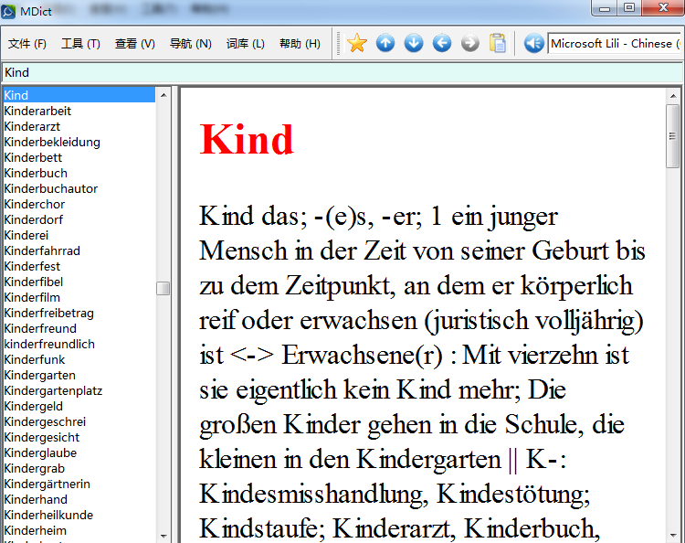
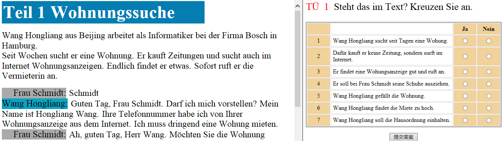

这方面先例应该很多，不过一般情况下拿到最终发布版容易，但source files比较难。GNU license下的词典软件其实比较多（StarDict,已经不活跃了，用GTK写的;SimpleDic,Qt4写的;GoldenDict,Qt5写的，这个应该是开源standalone词典方面做得最好的,也可以加载mdx格式的词典文件，想读懂其source code绝非易事;FreeDic,基于Web查词,体系结构也比较复杂。上面提到的4个project提供的数据文件很多都是一样的，大部分词典以对译方式为主，英语方面可以找到排版精美的Oxford之类的学习型词典，这个“逆向工程”可能会非常难做，不过可能是我们学习英语的需求比较旺盛，还是有热心的developer没有考虑版权问题制作了这些词典。具体数据来源我不太清楚，但无论是网站抓词还是从光盘等其他先购买再破解的途径入手，大概都需要先得到结构化的数据再进行排版。从网上可以找到Gross Worterbuch Deutsch als Fremdsprache没有排版的版本，如下图所示:
纸制版的大词典的关键词用Bold Face标出，最初整理这个版本的人并没有以任何方式标出这个Bold Face,此外原纸制词典的同形词(homograph)如machen1,machen2在该版本的词典中导致了词条的混乱，这可能是整理者使用dict数据结构时键值不允许重名等原因所致。除以上两点外（其他的不同暂时还没发现),该版本与纸制版是一致的。我之前尝试过对其中的名词进行重新排版，但试了一下发现难度比想像的大很多，仅提取第二格一项最终在15000有立Entry的名词中只能达到500多找不到第二格。但实际上该版本的词典是提供这500多名词的第二格信息的，只是格式和其他大部分名词不太一样，比如在给出第二格之前加上一些语体信息,humor之类的标签，我的正则表达式就找不到第二格信息了，还有的是veraltend结构，后面跟了这个名词现在常用的替代词，也可能还有其他情况。由于这些标签总共有几十个，我就没有进一步降低错误率。提取释义时发现了没有Bold Face的问题，得出了在仅有结构特征（根据控制字符,;>等)切分字符串，没有语义特征的情况下Idiom项目无法提取的结论。但其他方面可以硬着头皮一试，用Matlab,采用矩阵存储非结构化的数据，其中矩阵的行分别表示 [K-,K+,NB,zu,Synonyme,Antonyme,example,collocation,meaning](前4个记号是该纸制词典的缩略语，分别指复合名词在前，复合名词在后，特别注意，派生);列表示释义的个数，该脚本实现将(比如)input.txt(见文件input.txt,里面是Kind这个名词的信息)转换成一个矩阵(原input.txt中的||ID一行被自动忽略)，矩阵的每一个元素是一个字符串，一般会有大量的元素是空的，仿照矩阵的结构输出成表格结构的文件，通过Python script将其写成html进行初步排版,效果见Kind,其中所有的Bold Face是手工添加的，如果不加的话容易误读成和后面的内容连起来。
我自己再整理名词的时候，基本上只参考这一本词典，遇到像Kind这样词典里内容较多的词条，就先做一个KindFirst.html,后面遇到了些错误，改了NounExtractor.m几处对不同名词词条的格式判断，发现还是无法应对各种可能的名词词条的格式，非常细小的问题就手工改html文件，目前NounExtractor.m无法处理单释义的名词，主要觉得processing一个单释义的名词不如直接读input.txt,input.txt如果内容比较少，虽然没有排版，但还是有一定的可读性的。上面讲的并没有涉及接下来要做的工作重点，你问到了可以在哪些方面帮上忙，我建议你做一下你用的教材的第一册课文对话和单词表的xml文件，单词表的xml例子上次已经发过了,就是Vokabeln6-1.xml，但这是适应我用的教材的，如果你觉得哪里不合适可以自行设计xml的格式，但自行设计的格式要用相应的排版脚本进行处理，这方面你可以暂时不用考虑，如果你做的格式和Vokabeln6-1.xml的格式差别不是很大，我可以参照排版脚本Vokabeln6_1_1XMLLoad.js进行修改，这方面难度不大。 制作单词表的xml可能需要先在表格中手工录入单词，注意按照课本中每个单元出现的顺序(之前我录入时由于用的是课后A-Z的单词表，结果无法直接用到课文单词表的数据准备上），用python 读取表格数据,lxml module制作xml文件，这个流程可以参考。
课文准备可以参考Text6-1.xml,其中s:sentence;or:original;te:translation;sp:speaker equivalent,其他tag在html标签中都有，意思也一致。流程和单词表类似，我这里暂时并没有想到高效的方法，德语句子和中文翻译对齐可能会非常麻烦，如果你有好方法可以告诉我。Text6-1.xml排版效果如下，目前还没有处理好对话者排版的问题
制作单词表和对应的课文xml文件可以不必着急，不必也不可能全部做完(刘导告诉我可以做一些示例，毕竟做完的难度不是programming而是how to prepare data）。Herankommen zusammen!